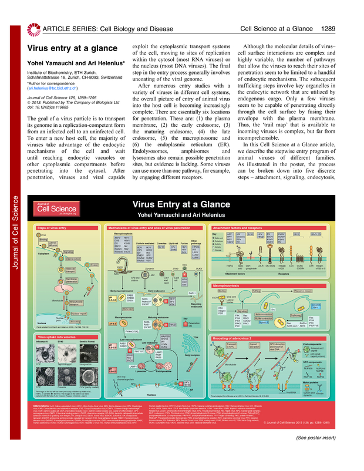

Click image below to view at full size.
Journal of Cell Sciencejcs.biologists.org
-
March 15, 2013
- Cell Science at a Glance
March 15, 2013
J Cell Sci
126, 1289-1295.
This Article
-
March 15, 2013
- » ExtractFree
- Figures Only
- Full Text
- Full Text (PDF)
- Poster Panels
- Supplementary Material
- Article Series
-
All Versions of this Article:
- jcs.119685v1
- 126/6/1289 most recent